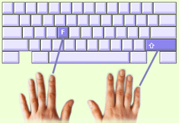

In dieser Lektion lernst du die ersten Großbuchstaben.
Du schreibst Großbuchstaben immer mit beiden Händen. Mit der einen drückst du die Umschalttaste und mit der anderen den Buchstaben. Dabei ist es wichtig, beide Tasten gleichzeitig zu drücken.
Die Umschalttasten werden immer mit dem kleinen Finger geschrieben.
Beispiel: Das große F |
 |